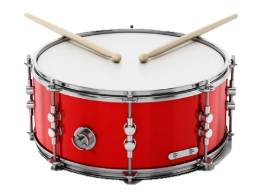

Import Sheet

Example 1. Reproduce the Beat
Start
piano
{{data["piano"]["shape"]}}
{{data["piano"]["texture"]}}
{{data["piano"]["palette_num"]}}
{{data["piano"]["palette_set"]}}
{{data["piano"]["interval"]}}
{{data["piano"]["size"]}}
{{data["piano"]["line"]}}
Drum
{{data["drum"]["shape"]}}
{{data["drum"]["texture"]}}
{{data["drum"]["color"]}}
{{data["drum"]["size"]}}
Haptic
{{data["haptic"]["sensitivity"]}}
{{data["haptic"]["intensity"]}}
{{User_Name}}
{{User_Number}}